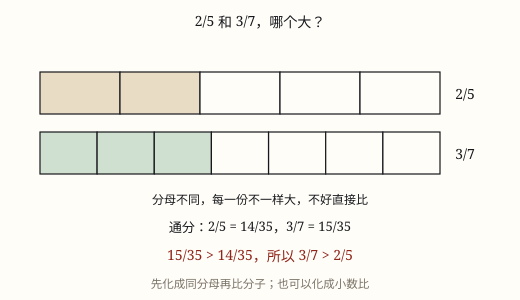

分数比较大小
同分母比分子，同分子比分母，都不同就通分或化成小数；分母大不等于分数大，关键看每份有多大。
| 所属主题 | 比较大小 |
|---|---|
| 所属模块 | 数与代数 |
| 课标学段 | 第三学段（5~6年级） |
| 前置知识 | 分数的意义与分数单位、分数的基本性质 |
| 核心素养 | 数感推理意识运算能力 |
教材定位
人民教育出版社《2024年版》
对应五下第 2 单元「分数的认识」：分数大小比较（化同分母、化同分子）。
课标要求
| 数与代数·数与运算 | 结合具体情境探索并理解小数和分数的意义，感悟计数单位；会进行小数、分数的转化，进一步发展数感和符号意识。 印刷第 23 页 行为动词：理解 |
|---|---|
| 数与代数·数与运算 | 了解符号＜，＝，＞的含义，会比较万以内数的大小；通过数的大小比较，感悟相等和不等关系（例2）。 印刷第 18 页 行为动词：了解 |
说明
整数和小数比大小，数位一对齐就行。分数不一样：分子和分母两个数同时在变，光看哪个数字大，一定出错。所以比分数之前，先想办法让其中一个变成相同的，或者干脆把分数换成小数。
第一条路：同分母比分子。 分母相同，说明每一份的大小相同，都是同一个分数单位，那么取几份谁多，谁就大。七分之三小于七分之五，因为都是七分之一，5 份比 3 份多。
第二条路：同分子比分母。 分子相同，说明取的份数一样多，但分母越大，每一份被切得越细、越小，所以分母大的那个分数反而小。五分之三大于八分之三，五分之一比八分之一大，同样取 3 份，当然是五分之三大。
第三条路：分子分母都不同。 两条道可选：一是通分，把两个分母化成相同的数，一般取最小公倍数，再按第一条路比；二是化成小数，各算各的值，再比小数。五分之三与八分之五，通分得四十分之二十四与四十分之二十五，所以五分之三小；化成小数是 0.6 与 0.625，结论一样。
怎么挑最省事？ 分母成倍数关系时通分最快，比如四分之一与八分之三，把前者改成八分之二就行；分母互质、数字又大时化成小数更快，比如十一分之七与十三分之九；如果一个比 1 大、一个比 1 小，不用算就能下结论。
使用场景
班级人数占比：一班男生占八分之五，二班占五分之三，哪个班男生比例高？
照着配方做点心：一个方子放三分之二杯糖，另一个放四分之三杯，哪个更甜？
看行程进度：已走全程的五分之三和八分之五，哪个走得多？
比较地块：两块菜地分别有七分之四、九分之五种上了菜，哪块种得更满？
注意点
通分时分子要跟着变。分母乘了几，分子也要乘几，分数的大小才不变。
化成小数比较时，除不尽就保留同样多的位数，都保留三位再比，不能一个两位一个三位。
别把分子加分子、分母加分母去比，那算出来的是另一个数，不是分数的大小。
答案要用原数写。通分只是为了比，回答时还得写原来那两个分数，别把通分后的数当成答案。

图 1：分母不同先通分，化成一样的份才好比
为什么是这样
算理推导
先想清楚分母和分子各管什么：分母是把整体平均切成几份，分子是取了几份。两块蛋糕一块切 5 份、一块切 8 份，这个「一份」本身就不一样大。
所以直接数份数没有意义：五分之三的 3 份和八分之五的 5 份，每份大小不同，份数多不代表总量多。要先把「一份」变成同样大，这一步就是通分。
通分找分母的最小公倍数：5 和 8 的最小公倍数是 40。五分之三等于四十分之二十四，八分之五等于四十分之二十五，现在每份都是四十分之一。
每份一样大了，比块数就行：25 块比 24 块多，所以八分之五大。
也可以绕开「份」，直接算分数值多少再比：五分之三是 0.6，八分之五是 0.625。两条路殊途同归，选顺手的走。
动手实验
剪两条一样长的纸条。第一条折成 5 等份、涂 3 份；第二条折成 8 等份、涂 5 份。并排一放，看不出谁长，这就说明「份数多」不等于「涂得多」。再把两条都换成 40 格的方格纸，分别涂 24 格和 25 格，一眼就分出来了。
按场景的例题
例 1（场景：校园生活） 比较两个班的男生占比
一班男生占全班的 5/8，二班男生占全班的 3/5。哪个班男生占比高？
解：分母 8 和 5 的最小公倍数是 40：5/8 = 25/40，3/5 = 24/40。25 > 24，所以 5/8 > 3/5。
答：一班的男生占比高一些。
例 2（场景：饮食与配比） 两个配方比甜度
甲配方放糖 2/3 杯，乙配方放糖 3/4 杯，两杯一样大。哪个配方更甜？
解：通分，公分母取 12：2/3 = 8/12，3/4 = 9/12。8 < 9，所以 2/3 < 3/4。
答：乙配方更甜。
例 3（场景：行程出行） 徒步走完全程
上午走了全程的 3/5，下午走了全程的 5/8。哪一段走得多？
解：化成小数比：3/5 = 0.6，5/8 = 0.625，0.6 < 0.625，所以 3/5 < 5/8。
答：下午走得多。
例 4（场景：农业生产） 两块菜地的种植进度
两块同样大的菜地，甲块种了 4/7，乙块种了 5/9。哪块种得更满？
解：分母 7 和 9 互质，公分母是 63：4/7 = 36/63，5/9 = 35/63。36 > 35，所以 4/7 > 5/9。
答：甲块种得更满。
常用推论
同分母的两个分数，分子大的那个大。
同分子的两个分数，分母大的那个反而小。
分子分母都不同时：通分成同分母再比，或化成小数再比。
真分数都小于 1，假分数都不小于 1，带分数都大于 1，先分类能省不少计算。
两个分数都比 1 小一点时，可以看它们各自差多少到 1，差得少的那个大。
易错点
错认为 1/4 > 1/3，理由是 4 比 3 大。
为什么错分子相同时，分母越大表示整体被切得越细，每一份越小。四分之一是切成 4 份取 1 份，三分之一是切成 3 份取 1 份，后者每份更大。
正确1/4 < 1/3。
错比较 2/3 和 3/5，看到 3 比 2 大、5 比 3 大，就判定 3/5 大。
为什么错分子分母分别在变大，说不清整体到底变大还是变小。必须通分或化成小数才能比。
正确通分得 10/15 与 9/15，所以 2/3 > 3/5。
错把 3/5 通分成 3/40，只把分母乘了 8。
为什么错分母乘 8 而分子不变，分数就被缩小成原来的八分之一，大小已经改了。
正确3/5 = 3 × 8/5 × 8 = 24/40。
直观理解
分数比大小像分蛋糕：分母是「切成几刀」，分子是「拿了几块」。切得越碎，同样拿一块就越小，所以分母大的分数不一定大。真要比出高低，要么把两块蛋糕切成同样多的份数再数块，要么干脆称一称各有多重，这就是通分和化小数。
同分母，比分子，份数多的它就大。 同分子，比分母，母大反而数变小。 都不同，别乱猜，通分或者化小数。 通分记牢一句话：分母乘几子也乘。